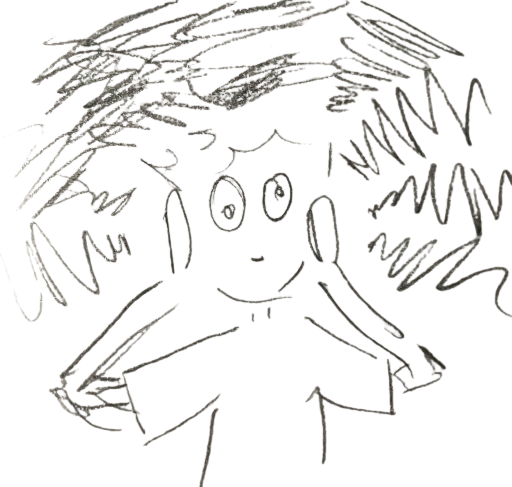

about page was inspired by solilokii's about page
art history & bears in trees layout by teppy
artworks gallery code by feimosi
header font by me, made on calligrapher. not all characters are available
mism4tchedsocks
credits / home
